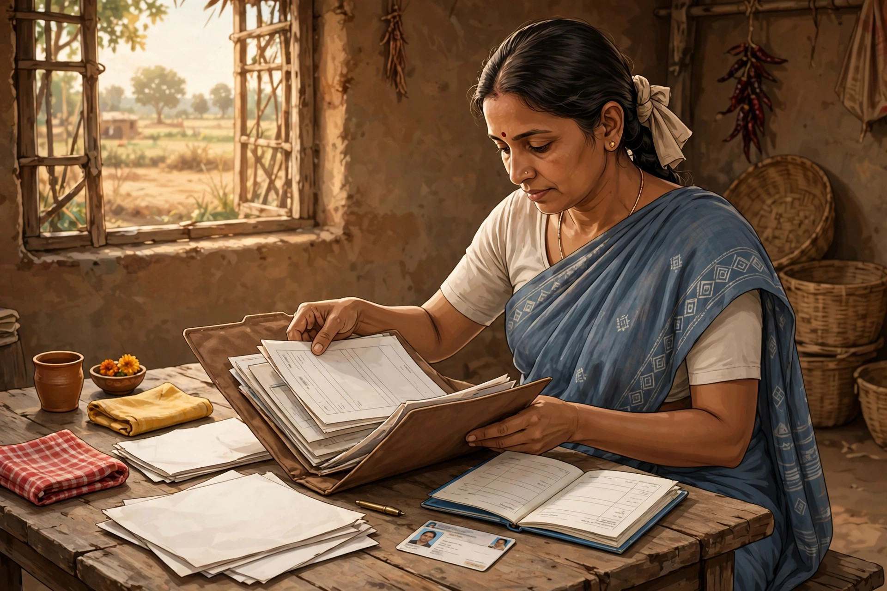

অন্নপূর্ণা ভান্ডার: নভেম্বর-ডিসেম্বরে নতুন আবেদন — জনকল্যাণ শিবিরে ফর্ম মিলবে

অন্নপূর্ণা ভান্ডার নিয়ে দুই দলের মানুষ অপেক্ষায় আছেন — একদল নতুন করে আবেদন করতে চান, আরেকদল আগে আবেদন করেও এখনও একবারও টাকা পাননি। দুই দলের জন্যই নতুন খবর এসেছে। অল্প কথায় গুরুত্বপূর্ণ বিষয়গুলো জানিয়ে দিচ্ছি।
📰 বড় খবর: কী ঘোষণা হয়েছে?
Aaj Tak Bangla-র প্রতিবেদন (২৩ অক্টোবর ২০২৬) অনুযায়ী, মুখ্যমন্ত্রীর ঘোষণায় জানা গেছে — আগামী নভেম্বর ও ডিসেম্বর মাসে অন্নপূর্ণা যোজনায় নতুন করে আবেদন গ্রহণ করা হবে। সেই সময় রাজ্যজুড়ে বিশেষ জনকল্যাণ শিবিরের আয়োজন করা হবে, আর সেই শিবিরেই অন্নপূর্ণার ফর্ম মিলবে।
- কবে: নভেম্বর ও ডিসেম্বর ২০২৬ (ঘোষণা অনুযায়ী)
- কোথায়: রাজ্যজুড়ে জনকল্যাণ শিবিরে — অফলাইনে ফর্ম মিলবে
- অনলাইন: অফলাইনের পাশাপাশি নির্দিষ্ট অনলাইন পোর্টালের মাধ্যমেও নাম নথিভুক্ত করার সুযোগ মিলবে
- বর্তমান অবস্থা: নতুন আবেদনের অনলাইন পোর্টাল ও অফলাইন প্রক্রিয়া সাময়িকভাবে বন্ধ আছে
তবে একটা কথা পরিষ্কার: আবেদন গ্রহণের নির্দিষ্ট তারিখ ও শিবিরের বিস্তারিত সূচি এখনও প্রকাশিত হয়নি। এই নিয়ে বিজ্ঞপ্তি খুব শীঘ্রই প্রকাশ হবে বলে প্রতিবেদনে জানানো হয়েছে। তাই এখনই কোনো নির্দিষ্ট তারিখ ধরে বসে থাকবেন না — সরকারি বিজ্ঞপ্তির অপেক্ষা করুন।
📊 প্রতিবেদনে আর যা জানা গেছে
- সেপ্টেম্বর মাসে ১ কোটি ৫৮ লক্ষ উপভোক্তা ৩,০০০ টাকা পেয়েছিলেন (১৫ তারিখে সকলের অ্যাকাউন্টে টাকা ঢুকেছিল)।
- ৬,১৬৩ জনের টাকা অ্যাকাউন্টের ভুলের জন্য আটকে রয়েছে — তাঁরা যাতে অক্টোবরের কিস্তির টাকাসহ নভেম্বরের টাকা পেয়ে যান, সে বিষয়ে প্রশাসনকে নির্দেশ দেওয়া হয়েছে।
- পুনরায় যাচাই-বাছাই করে উপভোক্তার সংখ্যা বাড়ানো হলেও অনেক যোগ্য মহিলা এখনও সুবিধা থেকে বঞ্চিত হচ্ছেন বলে অভিযোগ উঠছে — এমনকী বিভিন্ন প্রান্তে বিডিও অফিস বা পুরসভা ঘেরাও করে আন্দোলনও চলছে।
- অযোগ্যদের এই তালিকা থেকে বাদ দেওয়া হবে বলে প্রতিবেদনে জানানো হয়েছে।
📋 নতুন আবেদন করতে চাইলে এখন কী গুছিয়ে রাখবেন?
আবেদন শুরু হলে যাতে কোনো সমস্যা না হয়, সেজন্য এখন থেকেই কাগজপত্র গুছিয়ে রাখুন:

- আধার কার্ড
- ব্যাংকের পাসবই
- ভোটার কার্ড
- প্রয়োজনীয় অন্যান্য কাগজপত্র
আর একটা জরুরি কাজ: ব্যাংক অ্যাকাউন্টে আধার-DBT/NPCI সিডিং আছে কিনা যাচাই করে নিন — সিডিং না থাকলে টাকা ঢুকবে না। বিস্তারিত জানতে পড়ুন: লক্ষ্মীর ভান্ডার → অন্নপূর্ণা ভান্ডার: কী কী বদলালো।
❓ আগে আবেদন করেও টাকা পাননি — তাঁদের কী হবে?
⚠️ মনে রাখবেন: নিচের অংশটি সরকারি নির্দেশ নয়, লেখকের নিজের মতামত/আন্দাজ। চূড়ান্ত সিদ্ধান্ত সরকারের নির্দেশ দেখেই নেবেন।
যাঁরা আগে থেকেই আবেদন করে রেখেছেন, তাঁদের নতুন করে আবেদন শুরু হলেই আবার আবেদন করতে হবে, এমনটা নাও হতে পারে। হয়তো পুরনো আবেদনটাই যাচাই করে দেখা হবে, আর কোথাও কোনো সমস্যা থাকলে সেটা ঠিক করতে বলা হবে।
আমাদের পরামর্শ: নতুন আবেদন শুরু হলে প্রথমে নিজের আবেদনের স্ট্যাটাসটা যাচাই করে নিন। তারপর সেই সময় সরকার কী নির্দেশ দিচ্ছে, সেটা দেখে সিদ্ধান্ত নিন। স্ট্যাটাস দেখার পোর্টাল: socialregistry.wb.gov.in ও socialsecurity.wb.gov.in।
⚠️ সতর্কতা
অন্নপূর্ণা ভান্ডারের নামে কোনো অজানা ওয়েবসাইটে ব্যক্তিগত তথ্য দেবেন না, কাউকে টাকা দিয়ে ফর্ম ফিলাপ করার চেষ্টা করবেন না, আর OTP কাউকে দেবেন না — সরকারি কর্মী ফোনে OTP চায় না। "ডবল টাকা" বা "₹৬,০০০ একসাথে" — এ ধরনের দাবি ভুয়ো।
📞 হেল্পলাইন নম্বর
- 82820 82820
- 1800-345-5505 (টোল ফ্রি)
🔗 সূত্র ও অফিসিয়াল লিংক
📰 প্রতিবেদন: Aaj Tak Bangla — কবে থেকে ফের অন্নপূর্ণার অ্যাপ্লাই করা যাবে?
🌐 পোর্টাল: socialregistry.wb.gov.in · socialsecurity.wb.gov.in
🎬 এই খবরের ভিডিও স্ক্রিপ্ট
🎬 ভিডিও স্ক্রিপ্ট — স্ক্রিপ্টটি দেখতে পাসওয়ার্ড দিন।
❓ সাধারণ প্রশ্ন
প্রশ্ন: অন্নপূর্ণা ভান্ডারে নতুন আবেদন কবে শুরু হবে?
উত্তর: ঘোষণা অনুযায়ী নভেম্বর-ডিসেম্বর ২০২৬-এ জনকল্যাণ শিবিরে আবেদন গ্রহণ হবে। তবে নির্দিষ্ট তারিখ এখনও প্রকাশিত হয়নি — বিজ্ঞপ্তির অপেক্ষা করুন।
প্রশ্ন: আগে আবেদন করেও টাকা পাইনি — নতুন করে আবেদন করতে হবে?
উত্তর: এ বিষয়ে সরকারি নির্দেশ এখনও আসেনি। প্রথমে নিজের আবেদনের স্ট্যাটাস যাচাই করুন, তারপর সরকারের নির্দেশ দেখে সিদ্ধান্ত নিন।
প্রশ্ন: অনলাইনে আবেদন করা যাবে?
উত্তর: প্রতিবেদন অনুযায়ী অফলাইন শিবিরের পাশাপাশি নির্দিষ্ট অনলাইন পোর্টালের মাধ্যমেও নাম নথিভুক্ত করার সুযোগ মিলবে।
প্রশ্ন: টাকা না এলে কী করব?
উত্তর: প্রথমে ব্যাংকে NPCI সিডিং যাচাই করুন, তারপর হেল্পলাইন 82820 82820 / 1800-345-5505-এ যোগাযোগ করুন।
🌐 আরও নতুন নতুন তথ্যের জন্য আমাদের ওয়েবসাইট ভিজিট করুন: aicombo90.github.io/dafadar-online-seva — ওয়েবসাইটটা মোবাইলে সেভ/বুকমার্ক করে রাখুন যাতে হারিয়ে না যায়!
💬 সরকারি প্রকল্প ও চাকরির তাজা আপডেট সবার আগে পেতে আমাদের WhatsApp গ্রুপে যোগ দিন: WhatsApp গ্রুপে যোগ দিন
📺 ভিডিওতে দেখতে চান? আমাদের YouTube চ্যানেল সাবস্ক্রাইব করুন: @DafadarOnlineSeva